Thailand Trav-E-Logs©
| Sukhothai
|
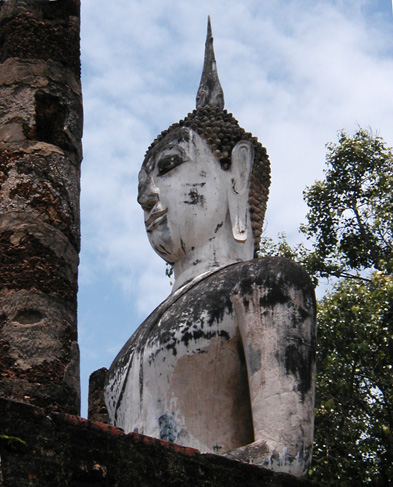 |
| back: Chiang Mai | Sukhothai Historical Park, A World Heritage Site. |
=================================
|
July 1 - 4, 2003 The walled city of Sukhothai was the first capital of Siam (Thailand), dating from 1257. The ancient capital, now a national historical park, is spread over 40 square kilometers; bikes are available for rent close to the entrance. The historical area represents the foundation of Thai culture, religion, and even Thai script. Although the ruins are predominately Buddhist, some of the earliest show Hindu influence, such as Wat Si Sawai, where fragments were found showing Vishanu and Linga, associated with the Brahman religion. Noticed quite a few reptiles amongst the ruins, and a few even posed for photos, included at the bottom. |
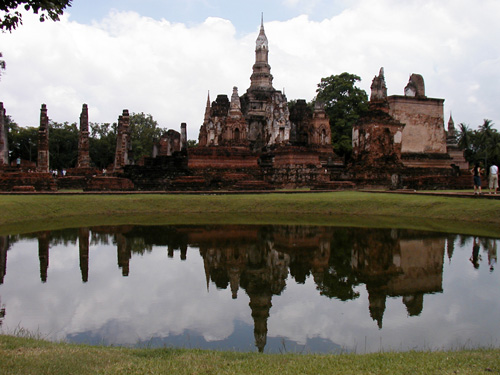 |
| 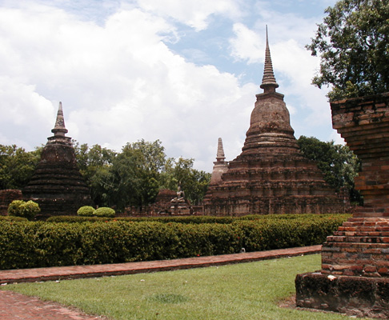 | 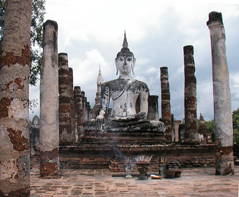 |
| 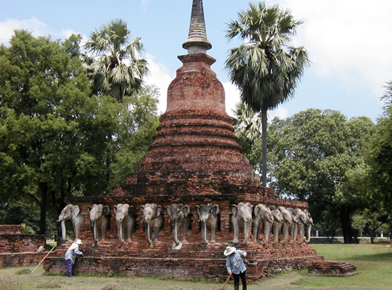 | 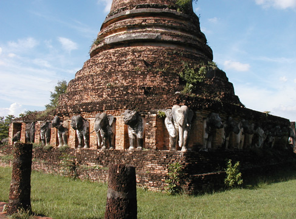 |
| 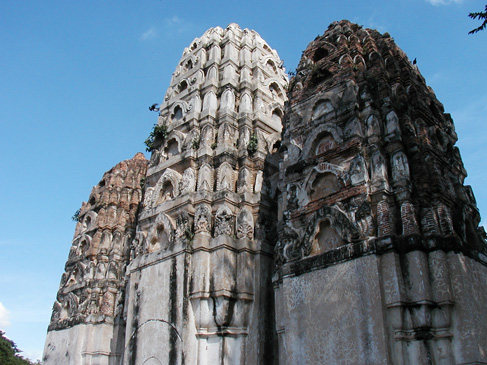 | 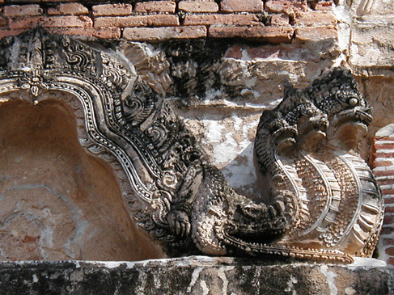 |
| 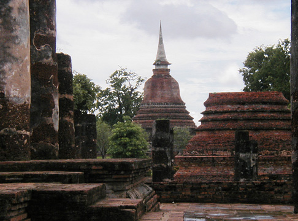 | 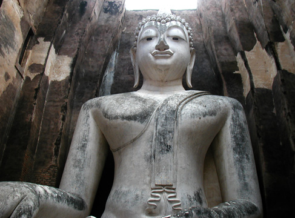 |
Thinking it might be wise to head down to Indonesia while the new visa rules are temporarily rescinded. Enjoy! Bill |
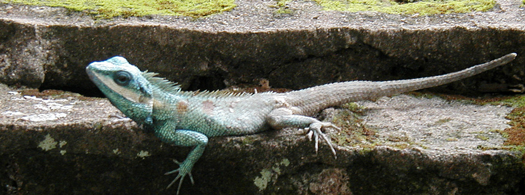 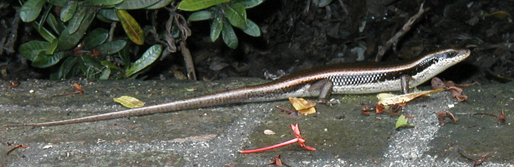 |
----------------------
"Travel is Fatal to Bigotry, Prejudice, and Narrow-minded ness" .... attributed to Mark Twain
| jump to: Return2Bangkok | next: Penang |
| back: Chiang Mai |